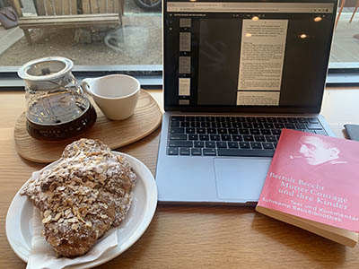

I was given three images by Erin Park. The images were about food. The last two seemed to relate to breakfast but the first one seemed more related to dinner. I decided to analyze the third image, shown below, as I believe it is the most interesting. The image seems to be a morning moment where the person is studying.

Erin Park, 2026
In the image we see a book, an online book, a scone, drinking coffee, and part of an outside patio. There is a warm color palette, mainly orange. The book almost jumps out at me as it is red and the text on the book is blue.
It seems like I have multiple actions that I can take: do I want to eat the pastry, do I want some coffee, do I want to go outside, do I want to read the book, or do I want to use the computer? I wonder if this could be a good option, maybe picking a theme like morning-in-the-moment.
Mysteriously it seems that the man on the book cover is looking at me. I think there is a possible concept with space and visual eyelines. For example, could you create a narrative that draws on people that observe you without you realizing it. One thing you could try is to turn off the color for everything but the red book that way you immediately see it and the figure on the book.
Part 2
This image is interesting because the pond here in the desert is man made in the early 1900s. In a barren desert there is a reservoir of water and people come to see the natural beauty. This picture is also unusual in the sense that it is a panorama where the lake actually curves around the viewer.
Ryden Richards, 2026
This image relates to my topic of man made environments coexisting with nature. Barker Dam has been standing since the 1900s and was used for cattle watering. Now animals use this reservoir as their watering hole.
I believe that man was created to take care of the earth and structures like these show that man can make contributions to the ecology that do not hurt the environment. I also believe there is a certain beauty to this picture. Meaning that something beautiful was the product of something that man designed.
To make these images more compelling I think I could highlight the man-made elements, perhaps I could use a mapping method. Or I could use a zoom in to certain features like the dam, the trees, the rocks, or the water and explain how different parts of the ecosystem thrive due to the dam water.
Visual Thinking Strategies
I enjoyed exploring how to think about and analyze images to find out what exactly is going on. The New York Times, in their article “10 Intriguing Photographs to Teach Close Reading and Visual Thinking Strategies” [website], mentions that three simple questions can help students to read and engage with pictures closer.
Instead of trying to understand what is going on with a picture I believe that we as designers can reverse engineer the questions into creative inspirations. For example, we can ask “How can I make a picture that makes the user stop to ask ‘what is going on in this picture?’ ‘What do I see that makes me say that?’ ‘What else can I see?’”
One good example that a designer asked these questions is by Ethan and Tom [website]. Ethan and Tom design intriguing visuals in video format that juxtaposed uncommon ideas and even colors together. The user can find different photos and videos that stand out to them personally and then are met with micro interactions that enhance the viewing experience.
Another example is Primland Residences [website], Primland includes a large map or photo that the user can click and drag, and then can select waypoints that describe what happens at those locations. Interested people are met with a high visual experience with microinteractions that include switching the season and even the ability to turn off and on the sound.
I also like the example of Shopify’s Renaissance page [website], this page juxtaposes complex image ideas like skateboarding with classical ideas and Renaissance like paintings. These images portray the idea of renewal, modern, and yet familiar which tie into Shopify’s AI experiences.
Overlay Design Patterns
I enjoyed learning what patterns to avoid when designing overlays. One of the biggest hurdles to overcome with overlays is navigation. Clearly communicating how users can escape from an overlay is no easy task. Explaining CTAs, adding a close button, and using the ‘Escape’ key all are ways to enhance navigation on an overlay.
Other suggestions are to keep the browser window from scrolling if the overlay scrolls. Even considering using a separate webpage instead of an overlay can enhance a user's experience. I learned that overlays should be purposeful and should only be used to communicate urgency and importance.
To learn more about overlay design patterns check out the article I read Kathryn Whitenton's article “Overuse of Overlays: How to Avoid Misusing Lightboxes” [website].
One suggestion from the article above that intrigued me was using the browser's back button to close the overlay and lightbox. I researched how I might include this in my designs and found a forum on Stack Overflow [website].
Interestingly the article mentioned that I could create a push state when the overlay opens and then edit the browser's history with Javascript which would allow users to use the back button to close the overlay.
Form Design
There are many ways a design can optimize form usability, in effect, increasing conversions so that users do not leave the form. Some quick fixes would lower cognitive overload by breaking the form into multiple steps, using a vertical layout for both mobile and desktop, and asking the easy questions first.
Interestingly, autofocusing the first input field helps users to find the starting location. I did a bit of research into how one can use autofocus on a field. Stack Overflow [website] mentions multiple methods one can apply auto focus to a form. One of the easiest is by simply using the autofocus attribute in the input tag in the HTML.
An important detail to form design, listed in the article below, is not putting default text, errors, or labels in the input itself. This is important because users can forget what they were supposed to type in the input. Using very specific explanations in the error message around the input helps the users to understand what they need to do.
To learn more about form design check out Medium’s “Best practices for form design” [website].
One example of the best practices in form design is the Request a Visit Form on jw.org [website]. When a user fills out the form wrongly the errors specifically state what the user is missing and then highlights where the input fields that caused the error.
JW.org also automatically selects the language and location that best suits the user by including a default value in the drop down menu. And because the site has over 1000 languages, they correctly use the drop down menu to enhance language selection.